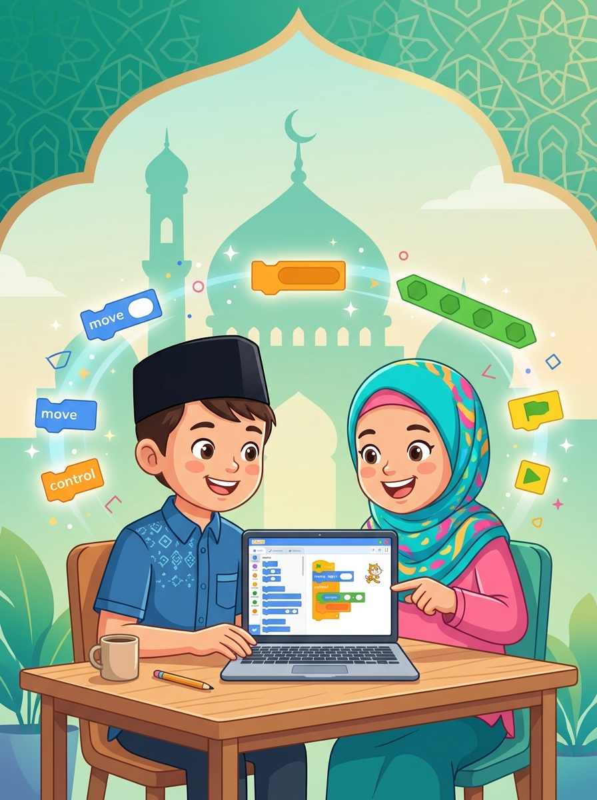
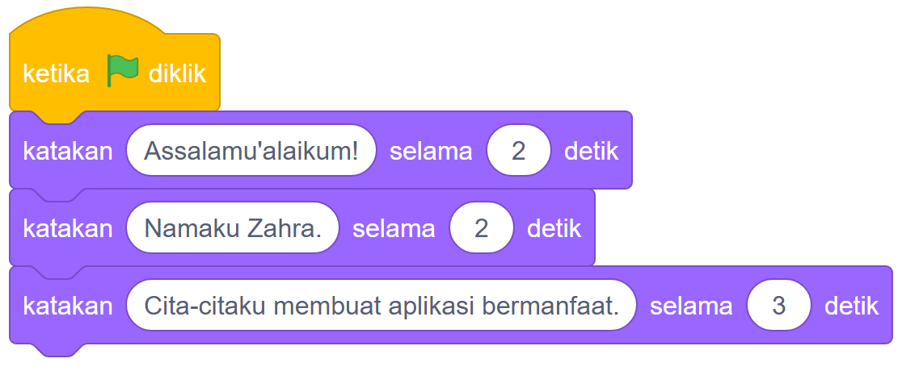
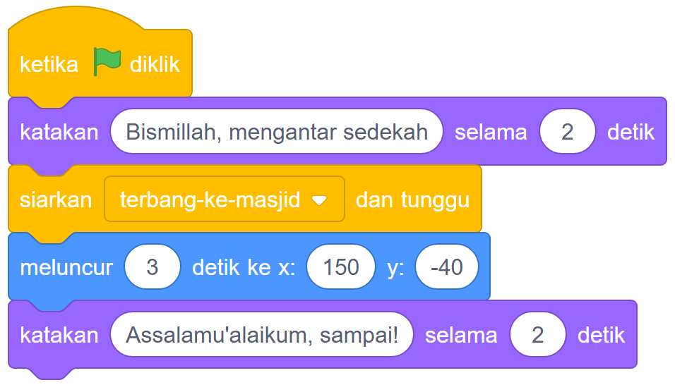

Pilih salah satu bab di bawah untuk mencoba simulasi game berjalan langsung di browsermu, mengunduh aset gambar karakter, dan mempelajari cara memodifikasinya di Scratch.

🎮 Simulasi Interaktif Canvas
Assalamu'alaikum!
🧕
Status: Siap dijalankanSprite: Zahra
🧩 Susunan Blok Koding (SESUDAH)

Blok ucapkan ... selama 2 detik memberi waktu tenang bagi mata untuk membaca kalimat salam dan nama secara tertib.
🛠️ Coba Modifikasi Sendiri!
Ganti teks salam dengan nama lengkapmu sendiri.
Ubah angka durasi balon kata dari 2 detik menjadi 4 detik.
Tambahkan balon kata ketiga yang menceritakan cita-cita kebaikanmu.
🎮 Simulasi Interaktif Canvas
🌳
🕊️
🕌
Bismillah, mengantar pesan sedekah!
Status: Burung bersiap di sarangPesan: terbang-ke-masjid
🧩 Blok Algoritma Runtut

Menggunakan penyiaran pesan siarkan [terbang-ke-masjid] dan tunggu memastikan burung tidak melompat sebelum doa basmalah selesai diucapkan.
🛠️ Coba Modifikasi Sendiri!
Ubah waktu meluncur dari 3 detik menjadi 1 detik (terbang kilat).
Ganti burung dengan karakter lain (misalnya kurir sepeda).